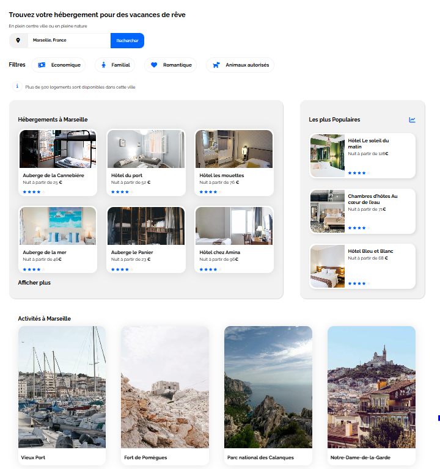
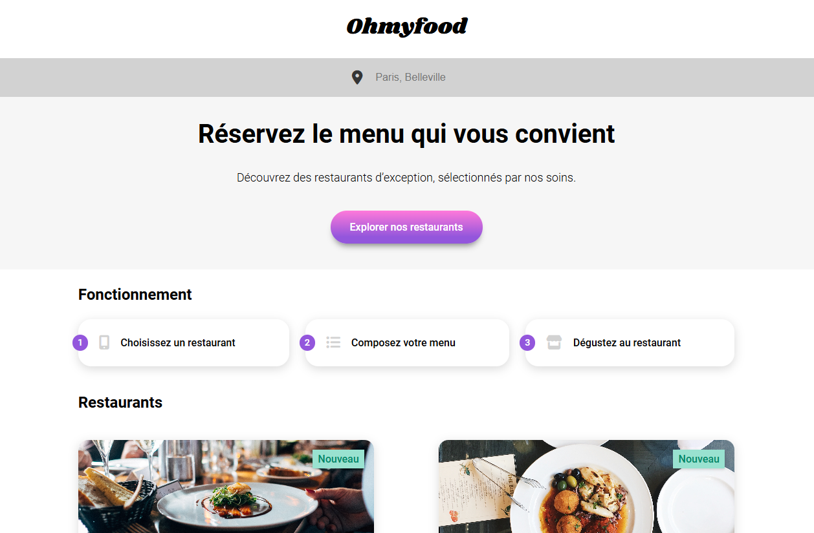
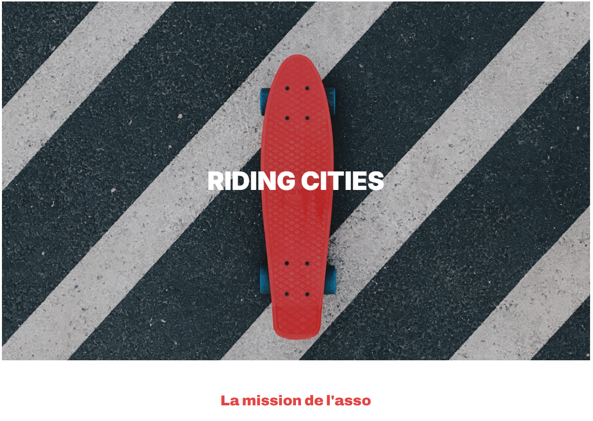
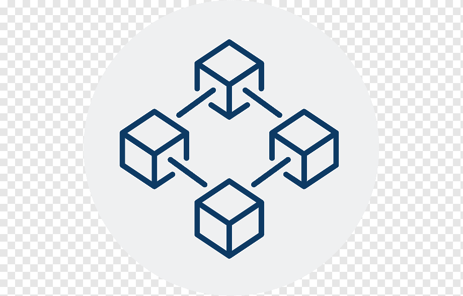

Booki
Booki est un site responsive design de réservation d'activites et de chambres d'Hotels en ligne
Voir plusProfessionnel engagé dans la gestion et l’optimisation des technologies, avec une expertise en maintenance et en gestion de systèmes. Apprécié pour sa capacité à déployer des solutions technologiques adaptées, à résoudre efficacement des problématiques variées et à optimiser les processus opérationnels. Expérience avérée dans la gestion de ressources, la supervision d’inventaires, et l’utilisation d’outils de ticketing pour garantir une réponse rapide et efficace aux besoins. Capable d’accompagner les utilisateurs, y compris dans des environnements exigeants, tout en veillant à la satisfaction et à la performance des solutions mises en place. Attentif aux innovations technologiques et à leur intégration pour soutenir la transformation digitale et l’efficience organisationnelle.
Explorez mes compétences, formations et expériences, ainsi que mes réalisations professionnelles et projets personnels. Mon objectif est de contribuer à des projets innovants en utilisant mes connaissances en technologies modernes.

Booki est un site responsive design de réservation d'activites et de chambres d'Hotels en ligne
Voir plus
OhMyFood est un site web mobile-first dédié à la présentation des menus proposés par les restaurants gastronomiques.
Voir plus
Promouvoir L'asso regroupe des passionnés de glisse et plus particulièrement de skateboard qui œuvrent pour la promotion de ce sport au niveau régional
Voir plus
Bot-Telegram est un assistant intelligent conçu pour simplifier vos tâches quotidiennes. Avec une interface conviviale et une utilisation intuitive, Bot-Telegram est idéal pour les étudiants, les professionnels, ou toute personne ayant besoin d'un outil pratique et polyvalent.
Voir plusDéveloppement d’un contrat intelligent et d’une DApp sur Ethereum pour la gestion de transactions sécurisées.
Voir plus“Kevin apporte toujours des solutions innovantes et efficaces.”
– Elon Musk
“Un collaborateur capable de gérer des projets complexes avec assurance.”
– Bill Gates